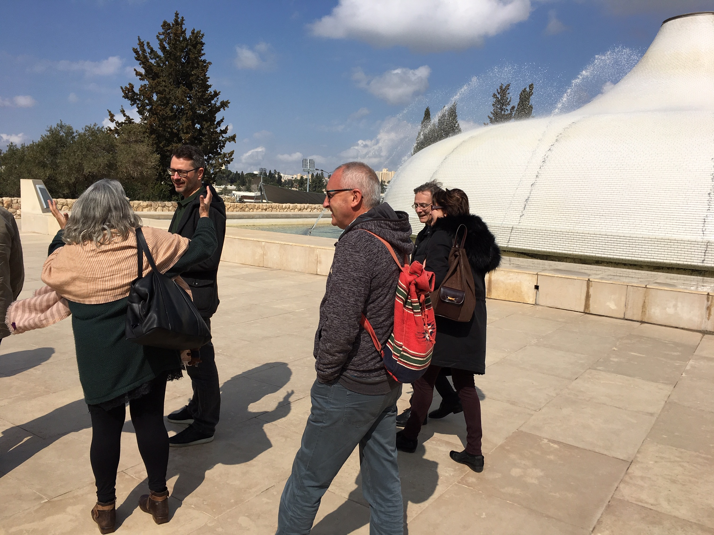

Annual Meetings
The 6th Annual Meeting of the Society will take place over 10-14th April 2024 at the School of Psychology at the University of Valencia, Spain. Click here to access the conference website.

Madrid (2022)
The 5th SCSC workshop was held at the beautiful Princesa campus in the heart of Madrid on 2 and 3 May 2022, organized by Jon Duñabeitia.
The event was hosted in connection with the ACELERA Network and as a satellite event to the International APPE-SEPEX Meeting held in Faro (Portugal) 5-7 May 2022.

Kaiserslautern (2021)
The 4th SCSC workshop was held in Frankenstein/Kaiserslautern, Germany, from 1 to 3 October 2021, organized by Thomas Lachmann, Réka Vágvölgyi, Aleksandar Bulajić, and Kirstin Bergstroem.
Kaiserslautern meeting program


Goa (2020)
The 3rd SCSC workshop was held at BITS Pilani University in Goa (India) from 3 to 7 February 2020 and hosted by Veeky Baths (BITS Pilani University Goa), Ramesh Mishra (University of Hyderabad), and Falk Huettig (Max Planck & Radboud University Nijmegen).

Haifa (2019)
The 2nd SCSC workshop was held on Mount Carmel at the University of Haifa, Israel, from 18 to 20 February 2019, organized by Zohar Eviatar and Tali Bitan.

Founding Meeting - Lisbon (2018)
The Founding Meeting was held on 21 and 22 June 2018 in Lisbon, Portugal and was organised by Tânia Fernandes and Susana Araujo (University of Lisbon).